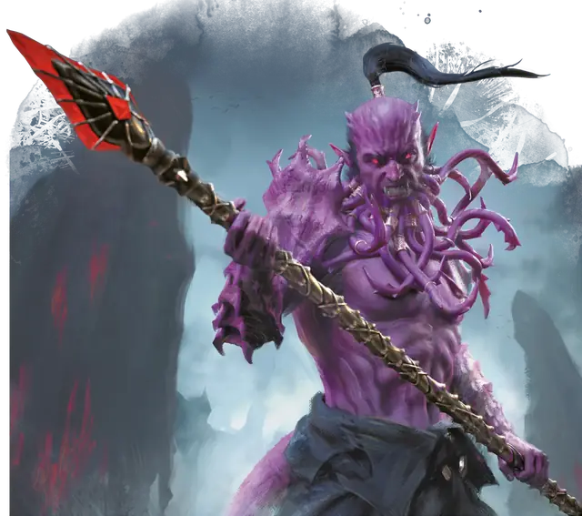

Бородатый дьявол (барбазу)
Bearded Devil
Среднее Исчадие (Дьявол), Принципиальное Злое

Класс Защиты 13 Инициатива +2 (12)
Хиты 58 (9к8 + 18)
Скорость 30 футов
| мод | спас | ||
|---|---|---|---|
| СИЛ | 16 | +3 | +5 |
| ЛОВ | 15 | +2 | +2 |
| ТЕЛ | 15 | +2 | +4 |
| мод | спас | ||
|---|---|---|---|
| ИНТ | 9 | −1 | −1 |
| МДР | 11 | +0 | +0 |
| ХАР | 14 | +2 | +4 |
Сопротивление урону Холод
Иммунитеты Огонь, Яд; Испуганный, Отравленный
Чувства Тёмное зрение 120 футов (магическая Тьма не препятствует зрению), пассивное Восприятие 10
Языки Инфернальный, Телепатия 120 фт.
Опасность 3 (700 опыта; БВ +2)
Особенности
Сопротивление магии. Бородатый дьявол (Барбазу) совершает с Преимуществом спасброски от заклинаний и прочих магических эффектов.
Действия
Мультиатака. Дьявол совершает одну атаку Бородой и одну атаку Дьявольской глефой.
Борода. Бросок рукопашной атаки: +5, досягаемость 5 фт. Попадание: 7 (1к8 + 3) Колющего урона, и цель получает состояние Отравленный до начала следующего хода дьявола. Пока цель отравлена таким образом, она не может восстанавливать Хиты.
Дьявольская глефа. Бросок рукопашной атаки: +5, досягаемость 10 фт. Попадание: 8 (1к10 + 3) Рубящего урона. Если цель — существо и у неё нет дьявольской раны, она подвергается воздействию следующего эффекта. Спасбросок Телосложения: Сл 12. Провал: Пока цель ранена, она теряет 5 (1к10) Хитов в начале каждого своего хода. Рана закрывается спустя 1 минуту, после восстановления Хитов цели заклинанием или после того, как цель или существо в пределах 5 футов от неё перевяжет рану, совершив проверку Мудрости (Медицина) Сл 12.
Бонус мастерства +2
Среда обитания Девять преисподних
Сокровища Оружейные
Бородатый дьявол
Дьявол силы и устрашения
Бородатые дьяволы (также известные как барбазу) — основа легионов Девяти Преисподних. Эти жестокие солдаты следуют приказам дьявольских генералов: защищают свои царства, вторгаются в миры Материального плана и сражаются с демонами в межпланарных войнах.
Помимо этого, бородатые дьяволы подстрекают смертных к бессердечным поступкам и злоупотреблению данной властью, раздувают их эго и подкармливают их внутреннего тирана. Злодеи, связанные с Девятью Преисподними, призывают барбазу на службу в качестве стражи, исполнителей их воли или солдат своих проклятых армий.
Знаменитые бороды этих дьяволов состоят из гротескных отростков, похожих на щупальца. Эта извивающаяся, усеянная колючками растительность содержит яд, препятствующий магическому исцелению. Бородатые дьяволы также известны своими характерными глефами, с помощью которых они управляют адской энергией. Существа, поражённые этим противоестественным оружием, страдают от дьявольских ран, которые становятся все хуже, пока их либо не перевяжут, либо не исцелят магическим образом.